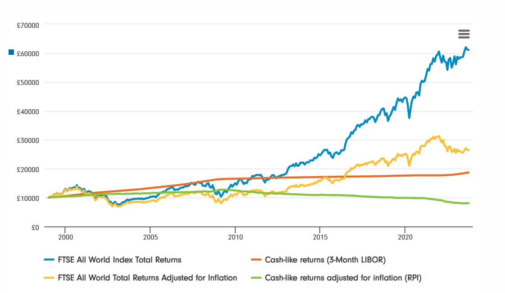
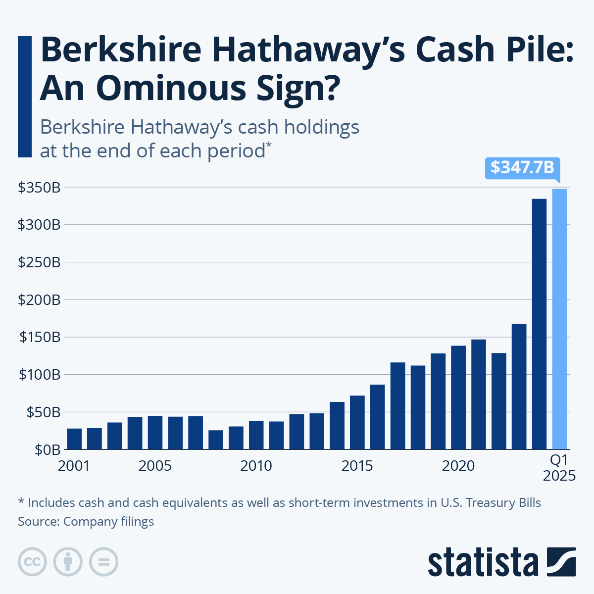
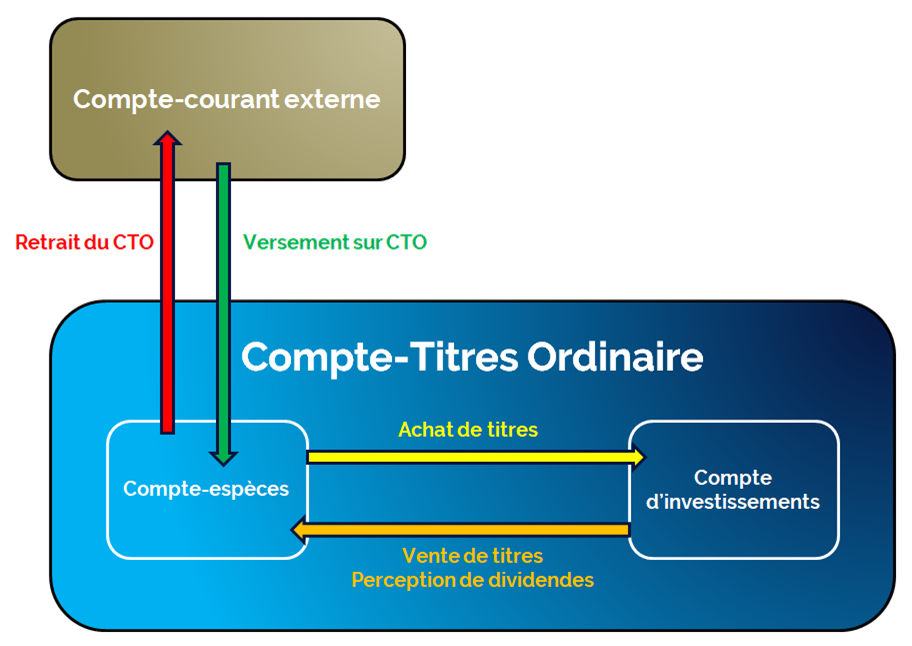

Il y a une question qui tourmente l'esprit de tout investisseur sérieux, une question qui revient sans cesse lors des périodes d'incertitude économique : "Dois-je investir la totalité de mon capital dès maintenant, ou dois-je garder de l'argent de côté en attendant un krach boursier ?"
La réponse à cette question fait appel à la notion la plus sous-estimée (et souvent la plus mal comprise) de la gestion de portefeuille : l'allocation des liquidités. En bourse, le cash (votre solde en euros ou en dollars qui dort patiemment chez votre courtier) ne doit faire l'objet d'aucune pitié analytique. Il faut d'abord comprendre à quel point le cash est un actif médiocre, avant d'en saisir la véritable puissance stratégique.
1. Le Cash est le pire des actifs (L'érosion silencieuse)
Commençons par une vérité mathématique brutale : sur le long terme, le cash est une garantie de perte en capital. Pourquoi ? À cause de l'inflation. L'argent qui dort sur votre compte-titres ne rapporte rien, mais il perd de son pouvoir d'achat année après année. C'est ce que l'on appelle l'érosion monétaire.

Comme le démontre le graphique ci-dessus, maintenir un portefeuille avec 50% d'actions et 50% de cash "pour se rassurer" est un suicide financier. Le cash agit littéralement comme un boulet. C'est ce que les professionnels appellent le Cash Drag (le fardeau des liquidités). Si vos actions performent à +15% sur l'année, mais que la moitié de votre portefeuille est en cash à 0%, votre performance globale est écrasée à +7,5%. Sur une décennie, la différence en euros trébuchants se compte en dizaines de milliers d'euros perdus.
2. L'illusion du "Market Timing" (Le coût de l'attente)
La seconde raison pour laquelle vous devez être investi en grande majorité, et non dormir sur une montagne de cash, nous ramène aux enseignements du Chapitre 3.8. La performance boursière ne provient pas de votre capacité à deviner les points bas du marché, elle provient du temps passé sur le marché (Time in the market).

Si vous vendez vos actions pour vous mettre en cash en espérant "racheter plus bas lors de la prochaine crise", vous prenez un risque inouï. Les rebonds boursiers les plus violents et les plus lucratifs (les "meilleurs jours") surviennent très souvent au beau milieu des marchés baissiers, lorsque le pessimisme est à son comble. Si vous êtes en cash ce jour-là, vous ratez la hausse fulgurante, et votre rentabilité à long terme s'effondre.
3. La Poudre Sèche ("Dry Powder") : Une munition purement offensive
Si le cash est si destructeur, devriez-vous être investi en permanence à 100,00% sans jamais garder un centime de côté ? Non.
C'est ici que s'opère le changement de paradigme fondamental. Dans la philosophie du Quality Investing, le cash ne doit pas être considéré comme un actif défensif (pour se protéger). Il porte un nom bien précis emprunté au jargon militaire et au capital-investissement : la Poudre Sèche (Dry Powder). Le cash est une munition purement offensive, prête à être tirée avec une précision chirurgicale lorsque le marché sombre dans l'irrationalité.

Observez le comportement du plus grand investisseur de l'histoire. Warren Buffett maintient constamment une poche de liquidités colossale. Pourquoi ? Pour bénéficier de ce que j'appelle la prime psychologique.
Imaginez que le marché panique à cause d'une hausse des taux ou d'une crise géopolitique, et plonge de 25%. Les excellentes entreprises que vous visez chutent avec le marché. Leurs fondamentaux sont intacts, elles génèrent toujours des milliards, mais leur cours de bourse est soudainement bradé.
- Si vous êtes investi à 100% : Vous êtes paralysé. Vous n'avez plus aucune munition. Vous êtes contraint de regarder les soldes du siècle sans pouvoir y participer. La peur vous envahit. Vous subissez le marché. L'investisseur qui n'aura pas de cash lors d'un krach est le grand perdant de la décennie.
- Si vous avez une poche de cash : La psychologie s'inverse totalement. La chute du marché ne vous terrifie plus, elle vous excite profondément. Vous vous frottez les mains, car vous avez les munitions nécessaires pour acheter l'excellence à des prix défiant toute rationalité. Votre cash vous a transformé de victime en prédateur.
4. Où stocker cette Poudre Sèche ? (La Rémunération du Cash)
Garder de la Poudre Sèche offensive (entre 1% et 20%) est vital, mais comme nous l'avons vu au point 1, laisser cet argent dormir à 0% vous expose à l'érosion de l'inflation. La gestion professionnelle de portefeuille exige d'optimiser chaque euro, même celui qui n'est pas encore investi.

Heureusement, le paysage du courtage a évolué. Aujourd'hui, plusieurs courtiers proposent de rémunérer votre cash non investi (votre poche Espèces) à des taux très compétitifs, souvent basés sur les taux directeurs des banques centrales (BCE ou FED). C'est une stratégie extrêmement puissante : cela permet de faire travailler ce cash passivement, d'atténuer grandement l'effet de l'inflation, tout en gardant une liquidité totale et immédiate pour déployer votre capital lors d'une baisse brutale du marché.
Parallèlement, si votre courtier ne propose pas cette rémunération directe, vous pouvez tactiquement placer ce cash sur des Fonds Monétaires ou des ETFs monétaires (comme ceux suivant l'€STR). Ces actifs sont extrêmement stables, liquides, et vous permettent de générer un rendement sans risque pendant la phase d'attente opportuniste.
5. La Mécanique : Comment alimenter sa poche de liquidités ?
Il ne s'agit pas de vendre toutes vos actions d'un coup. La constitution de cette poche de Poudre Sèche doit se faire de manière organique et continue, via trois mécanismes naturels :
- L'épargne récurrente (Le flux sanguin) : Chaque mois, en versant une partie de votre salaire sur votre compte-titres (DCA), vous recréez naturellement du cash. Si le marché vous semble exceptionnellement cher et surévalué un mois précis, rien ne vous oblige à acheter le jour même. Vous pouvez laisser cet argent s'accumuler sagement dans votre poche "Dry Powder".
- Les dividendes perçus (L'effet boule de neige) : Les entreprises de votre portefeuille vont vous verser des dividendes en numéraire. Plutôt que de les réinvestir machinalement et immédiatement, vous pouvez décider de les stocker pour faire gonfler votre réserve de liquidités en attente du moment propice.
- L'écrémage tactique (Prendre des profits) : Si l'un de vos monopoles connaît une hausse spéculative totalement délirante et que sa valorisation atteint des sommets absurdes, n'hésitez pas à "écrémer". Vendez 10% ou 15% de votre position. Cela sécurise une partie de vos gains phénoménaux tout en rechargeant votre compte en cash.
6. Le "Sweet Spot" : Quel pourcentage de Cash viser ?
Le pourcentage idéal de liquidités n'est évidemment pas une science mathématique exacte. Il dépend de votre âge, de votre profil de risque et des valorisations actuelles du marché. Cependant, l'expérience prouve qu'il faut se fixer des limites strictes pour ne pas tomber dans les pièges psychologiques vus plus haut.
Mon conseil stratégique : Maintenez une poche de liquidités (Dry Powder) comprise entre 1 % et 20 % maximum de la valeur totale de votre portefeuille.
Dans un marché neutre ou baissier, vous serez naturellement proche des 1% (car vous déploierez votre cash pour saisir les opportunités). Dans un marché extrêmement haussier, très cher et spéculatif, votre poche remontera organiquement vers les 15% ou 20%.
Mais ne dépassez jamais ce plafond des 20%. Conserver un portefeuille composé à plus de 80% d'actions de classe mondiale est la condition sine qua non pour profiter de la magie des intérêts composés et protéger votre pouvoir d'achat contre l'inflation.
🔑 Ce qu'il faut retenir
Le cash est un actif financièrement destructeur à long terme (érosion via l'inflation), mais il constitue une "Poudre Sèche" offensive psychologiquement indispensable pour saisir les opportunités lors des krachs.
Cherchez activement à rémunérer ce cash via des courtiers modernes ou des fonds monétaires pour le faire travailler en attendant le déploiement.
Maintenez une exposition massive aux marchés actions pour capter la croissance, en limitant votre poche de liquidités entre 1 % et 20 % maximum.